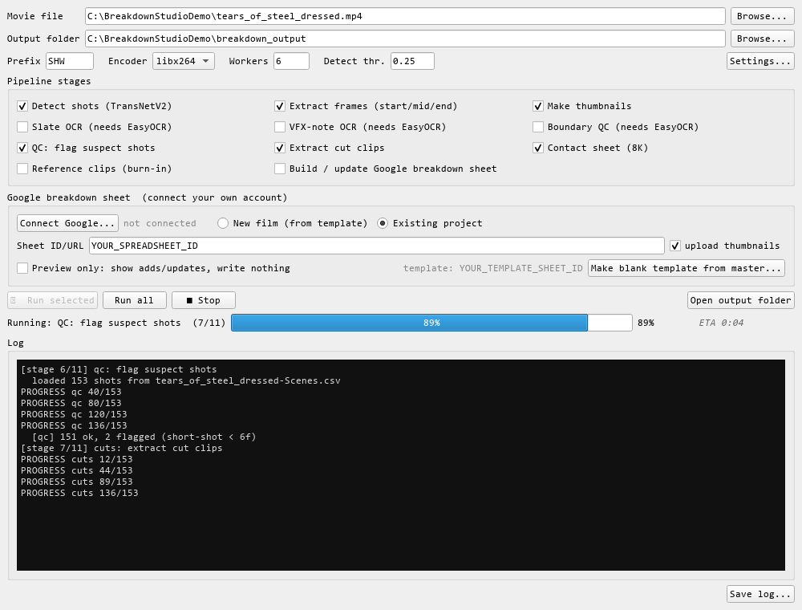
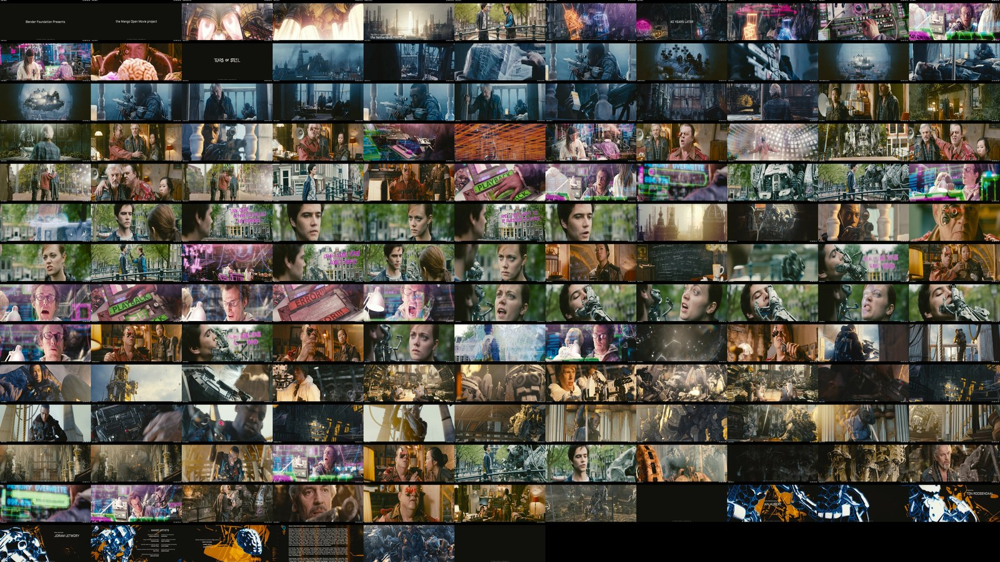

Scan & split the first cut shipping
Neural shot-boundary detection finds every cut in the movie file. A slate-change check catches over-splits and missed cuts, so the shot list is true before anything downstream.
Eight steps, one tool. It runs offline on your own machine and your own Google account. Every step ships today, validated against four cuts of a real feature in production.
Neural shot-boundary detection finds every cut in the movie file. A slate-change check catches over-splits and missed cuts, so the shot list is true before anything downstream.
Three frame-accurate stills per shot. Pick which frame represents the shot, or keep all three for a scrub-free read of how it moves.
Read the top-left slate (scene / slate / take) for identity, and the bottom-left editorial note that actually marks a shot as VFX. A three-frame check rejects notes that bled off the shot before.
Every thumbnail uploads to your own Drive, deduplicated by checksum so re-runs never pile up copies, and the sheet points straight at them.
A real spreadsheet with inline thumbnails, shot codes, real show timecode and duration, ready to bid, note, and share, on the account you already use.
An 8K contact sheet for the whole reel, plus per-shot reference clips with the shot code and duration burned in, and a stitched timeline, for reviews and vendor packages.
Diff a new cut against the last one: what stayed, shifted, changed, dropped, or is genuinely new, so a re-cut becomes a short review instead of a full re-log.
Match every shot back to your master one-to-one and write its new timecode, duration, thumbnail and notes in place. Hand-added shots are protected; nothing applies without your sign-off.
An accurate, current shot count, the VFX subset, and per-shot duration deltas cut to cut: the numbers a bid, a vendor negotiation and a cashflow actually stand on.
When you are the supervisor and the coordinator, the log builds itself: every VFX shot and its editorial note surfaced straight from the burn-in.
Your client gets a thumbnail-for-thumbnail breakdown and a budget that tracks the cut instead of drifting behind it, from one person, in days.
A master shot code is unique, so the match is a strict one-to-one assignment. It resolves in priority order, the same way an experienced coordinator does it by hand.
Not a toy benchmark. Every module was regression-tested against the operator-verified breakdown of a feature in active production: four successive cuts, thousands of slate reads, and the final producer-approved master match as ground truth. (The production stays unnamed; the numbers don't.)
Everything below was produced by the tool itself on the Blender Foundation's open film Tears of Steel (CC-BY), dressed with production-style slate and note burn-ins by the shipped dress_film.py. No client footage anywhere on this site. 149 shots detected, slates read at 96%, notes at 98%, straight off the burn-ins.


Detecting, framing, OCR and upload are automatic. But whether a vanished shot is a real drop or a protected invisible-VFX shot, whether two over-splits should merge, which master row a drifted code belongs to, that is judgment. Breakdown Studio ships a context pack that briefs Claude, or any AI pair, to help with exactly that, with the guardrails already baked in.
Protected shots never auto-omit. Identity is the slate, never the timecode. Nothing hits the master without your approval. The rules travel with the tool.
The ingest-to-sheet half is done and in daily use. The cross-cut intelligence was proven on a real feature and is being folded into the open tool. Contributors welcome.
I built this because I was hand-matching six hundred shots across every re-cut, and losing real work in the noise. So I did what the show needed: designed the pipeline, wrote the tooling, and briefed the AI to carry the parts that don't automate. The tool does the bookkeeping so producers can do the producing.
Geoffrey Hancock · VFX Supervisor & Producer who also builds the tools. Designed and hardened this end to end on a live feature, from the neural shot detection to the AI guardrails, while running the show it was built for.
The portfolio point, in one line: not a VFX artist who bought some tooling, and not an engineer who read about VFX. One person who can supervise the shots, engineer the pipeline, and orchestrate the AI with the right guardrails, and ship all three into daily production use.
Breakdown Studio is open source and on GitHub now. Star the repo to follow along, or leave your email and I'll send one note when it formally launches.